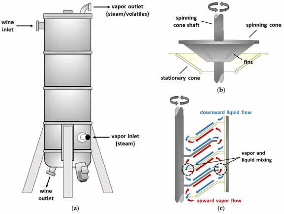

By Ephrayim Baskin | Pesach 5784 — April 2024
One long afternoon, not so long ago, we schlepped into the cool Beth Rivkah gym, seeking refuge from the unusually humid Melbourne summer day. The topic of the Shabbos shiur that week made the kiddush club sober with anticipation – can one replace wine with grape juice instead? Rabbi Lesches, like a master vintner, uncorked the debate, as comments and questions fermented and bubbled over from the crowd. One of the main reasons that wine is used for kiddush is derived from a verse in Shoftim (8:13). It states that wine causes Hashem and men to rejoice, implying alcohol is critical to the liquid's spirit. However, the Gemoro (Bava Basra 97b) states that one can squeeze a cluster of grapes and make kiddush with the resulting liquid, even though it contains no alcohol. To address this discrepancy, the Rashbam explains that grape juice is acceptable because it has the potential to develop alcohol.
Never to be satiated with a lack of complexity, the debate continued into modern day production practices, where the grape juice’s ability to ferment into alcohol is removed through heat or chemical treatment. Is our modern juice comparable to the vintage juice of old? The argument swirls around Rashbam’s explanation above – in the case of the freshly squeezed grape juice, it can still become wine and is thus kosher for kiddush, whereas commercially processed grape juice will never mature into wine. On the other hand, commercially processed grape juice had the ability to become wine before it was treated, and perhaps its validity cannot be uprooted. Furthermore, it most often retains the theoretical ability to ferment, at least to some degree, if left around in the right conditions for long enough. So what is the halacha?
While the rabbi delved into the juicy details, I found myself staring up at the ceiling wondering how on earth they manage to get the climbing ropes off the support bar when they use our makeshift shule as a gym. My brain doesn’t focus very well in the afternoons, you see. Next, I was considering the varieties of yeast that might be present in the beards of various members of the shiur that could help jump start a grape juice fermentation for the purpose of kiddush. Anyway, at some point I had a light bulb moment and interrupted spoke up – “Rabbi Lesches, what about non-alcoholic wine?” Rabbi Lesches looked at me as if I had completely missed every word that he had said (which wasn’t completely untrue), responding, “You mean, like grape juice?” “No, like non-alcoholic wine,” I responded with a dash of chutzpah.
“What is that?” “Well,” sounding somewhat educated, “this wine is the latest varietal within the wine industry, called non-alcoholic wine or zero alcohol wine, where they ferment wine and then remove the alcohol from the wine, leaving a type of wine that you can enjoy without wineing about the amount of sugar or alcohol in the wine (for those counting, this indeed was a nine-wine sentence). The question being that, unlike grape juice, this substance not only lacks alcohol, but also has no potential for further fermentation. On the other hand, non-alcoholic wine not only once had the ability to ferment, it actually did. On the flipside, again, perhaps the purposeful removal of its alcohol renders it completely unfit.” “Hmm,” considered Rabbi Lesches, retorting with the rare, “that is a good question,” and the rarer yet, “I do not know the answer.” To ensure his flock does not sit idly while the rabbi searches for answers for our purely academic question, I received a text from the rabbi later that week,
“Nu…sounds like you have a topic for a Pesach article!” So, without the excuse of no ideas for an article, and after that rather long- wineded introduction, I present to you my findings to the non-intoxicating question: can kosher non-alcoholic wine be used for kiddush and the 4 cups a.k.a. is de-wine divine?
But first, there will be a technical intermission about how non-alcoholic wine is made, followed by another technical intermission about the halachic implications. Finally, there will be a Non-Technical Admission about this author’s grand grape desires.
Technical Intermission #1 The initial technology for non-alcoholic wine was developed here in Australia in the 1980s, when food scientist Andrew Craig created a process called “spinning cone columns” to extract essential oils from a range of products. A substance is first poured under vacuum into the top of a column that has a series of cones, one under the other. Half of the cones spin, and the alternating half do not. (Some would blame the cricket pitch.) From the opposite direction, a gentle stream of steam is introduced. As the steam works its way up the column, it causes the volatile compounds pouring downwards over the cones to change into a vapour, which is then discharged at the top of the column, while the remaining liquid component exits at the bottom of the column.
A marketing tech visiting Australia realised that this technology could be used to decrease the alcohol content from wine without significantly damaging the flavour, as would occuraging the flavour, as would occur in other forms of distillation. Initially, this was used to make lower alcohol (read lower tax) wines, but eventually morphed into one of the most popular processes to create non-alcohol (or less than 0.5% alcohol) wine. Besides dodging the taxman, he figured that non-alcoholic wine would offer consumers fewer calories and less alcohol, all without sacrificing that delightful wine taste. It’s like trying to have your cake and eat it too, but with wine... well, sort of. It even eventually gained “functional-food” status, as it still contains antioxidants such as resveratrol.

While spinning cone technology has remained popular to create non- alcoholic beverages, there are also other methods. For example, vacuum distillation removes the alcohol in the same way as spirit production, but with two main differences. First, it occurs under a vacuum, which allows the alcohol to evaporate at a lower temperature without affecting the flavour. Second, unlike in spirit production, our interest here lies not in the distilled alcohol but in the remaining residue (the other part).
Another method, known as membrane filtration, leverages the smaller molecular size of an alcohol compound versus the larger compounds responsible for colour and flavour in wine. Wine is forced through an extremely fine mesh that only allows the alcohol and some water particles to pass, whereas the larger flavour and colour compounds of the wine are retained on the other side of the mesh. A second squeeze of the grape if you will.
Usually, a combination of technologies is used, as some flavour compounds end up getting removed together with the alcohol. Food technologists have devised ways and means to then separate those flavour compounds from the alcohol component, to be blended back into the product.
Technical Intermission #2 So where does this leave us from a halachic perspective? Warning! From here on, you are privy to my boich sevoros alone; well, as long as you can stomach them. As a disclaimer, if someone were to commercially produce kosher non- alcoholic wine, the question with all the details would need to be considered by a Rav.
I couldn’t find any source that directly considers non-alcoholic wines.
However, the same way that alcohol has a lower boiling point than water, which allows it to be distilled from its water-based components, so too, it has a lower freezing point. Interestingly, the Darkei Teshuva quotes a responsa from the Shem Aryeh (HaRav Aryeh Leibush Lipshitz), printed in Vilna in the 1870s. He discusses the practice of wine merchants who would store their barrels of wine in wintry ice until part of the wine would freeze. They would then decant the liquid component (which would have a higher percentage of alcohol), following which they would thaw the frozen component. The question posed to the Rav was whether this “wine-water” would be subject to the same restrictions as regular wine with regard to handling by non-Jews. The Rav ruled that it should be regarded as wine, but only as a matter of stringency. However, say the wine-water were to turn into vinegar (which is unlikely given the lack of alcohol), it could then be treated and handled as a non-wine product.
Although the frozen wine and ensuing wine-water scenario is similar to “de- alcoholised wine”, it still doesn’t really address our situation as:
I think an approach to answering our question lies with the unanswered grape juice question from paragraph #2.
There are many poskim who consider the words of the Rashbam above, but nonetheless allow the use of modern- day grape juice for kiddush. The Shevet Halevi (9:58) rules that grape juice can be used for kiddush, even if chemically or heat treated to stop the production of alcohol. He bases his opinion on a Meiri (Bava Basra 97b) who explains that the requirement for wine to be alcoholic was only stipulated for wine used as libations on the altar, whereas for kiddush, the alcohol content is not critical. The Meiri provides a general rule saying that any human-initiated change to grape juice that improves the product is allowed to be used for kiddush. So, since non-alcoholic wine still tastes like wine and is considered an improvement to the wine, it would be kosher for kiddush and the 4 cups of wine, at least according to the Meiri.
Even if not, the de-alcoholising processes could be used to reduce the alcohol in wine to a lower percentage, and produce a dry low-alcohol wine that would be acceptable by even the more stringent opinions in this debate. As well as acceptable to the headache prone drinker.
Non-Technical Admission I do hope one day that kosher non- alcoholic wine will be available at the kosher store nearest to you. However, my more fervint dream (as opposed to my son Kovi’s nightmare) is that the kosher wineries focus on a much more critical liquid innovation – non-sugar grape juice!
Originally published in Young Yeshivah Magazine. Republished with permission.